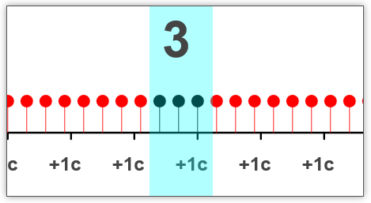
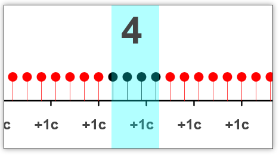
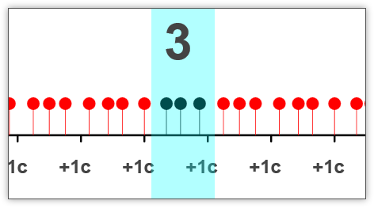
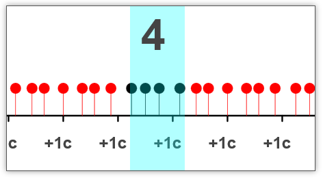

Принцип неопределённости — одно из наиболее известных следствий квантовой механики. Он задаёт теоретический предел точности одновременного измерения некоторых пар величин. Например, оказывается, невозможно одновременно точно измерить и координату, и импульс. Или и энергию, и время.
Очень часто это явление преподносится, как некое непостижимое квантовомеханическое чудо. Как необычное явление иного, квантового мира. Это порождает множество мистификаций. В этой заметке я хотел бы привести пример макроскопической системы на которой, однако, ярко наблюдается неопределённость, аналогичная квантовомеханической.
Заранее извиняюсь за достаточно бытовой язык и вольное использование слов типа «погрешность». Я ориентируюсь на самого широкого читателя и очень надеюсь, что мои мысли будут поняты.
Пример возникновения неопределённости в макроскопическом мире
Давайте рассмотрим прибор, измеряющий пульс. Как он может быть устроен? Очень просто: он считает количество ударов сердца на определённом интервале времени и вычисляет количество ударов в секунду.
Допустим у нас будет пульс π ударов в секунду (чтобы избежать вырожденных случаев и сделать наше рассмотрение наглядней; ниже вы увидите более экзотичные примеры).
Пусть наш пульсометр отводит на каждое измерение ровно одну секунду. Тогда, очевидно, он будут выдавать значения 3 или 4. То есть, погрешность будет порядка 30%.


Итого, мы можем сказать, что на протяжении данной секунды (точность определения времени — одна секунда) пульс составлял 3-4 удара в секунду.
Давайте увеличим интервал измерений в пять раз — до пяти секунд. При каждом замере мы будем получать числа 15 или 16, что соответствует 3-3.4 ударам в секунду. То есть наша погрешность составила примерно 6%. В пять раз размазали время и во столько же раз снизили погрешность измерения пульса.
Если мы увеличим интервал измерений в десять раз — до десяти секунд, то наш пульсометр будет выдавать числа 31 и 32. То есть, он скажет, что пульс 3.1-3.2 удара в секунду. Погрешность стала 3%.
В этот раз, мы можем назвать более точное значение пульса, но момент измерения пульса стал ещё более размазанным. Мы можем указать только десятисекундный интервал, для которого мы производили измерения. Не точнее. Где-то на этом интервале пульс действительно был таким, но, возможно, за это время он изменялся. Тут царит полная неопределённость.
У вас мог быть ровный пульс, a могла быть и аритмия. Давайте вернёмся к нашему первому примеру «1 секунда и 3-4 удара»; вот вариант, когда тот же результат получается при не ровном пульсе:


То есть, если мы десятикратно жертвуем точностью времени, то десятикратно же увеличиваем точность измерения пульса.
Квантовомеханический принцип неопределённости утверждает именно это: произведение погрешностей измерения двух величин не может быть меньше определённого значения.
А какое это имеет отношение к настоящему квантовому принципу неопределённости?
Как ни странно, — самое прямое. Дело в том, что квантовомеханический принцип неопределённости имеет точно такую же природу. Достаточно вспомнить про связь импульса с длинной волны де Бройля.
λ = h / p
То есть соотношение неопределённости между импульсом и координатой связно с невозможностью одновременного измерения пространственной координаты и пространственной длины полны (де Бройля).
С энергией и временем всё ещё проще. Энергия связна с определённой частотой:
ν = E / h
То есть тут всё просто как в нашем случае. Невозможно одновременно точно узнать и частоту и время (в которое эта частота имеет место быть).
Математические истоки принципа неопределённости в квантовомеханических системах
Вы наверно уже обратили внимание на то, что неопределённость возникает не из-за каких экзотических законов волшебного квантового мира, а просто из здравого смысла.
Математические истоки соотношения неопределённости тоже не имеют никакого отношения к квантовой механике. Они вытекают из фундаментальных свойств преобразований Фурье и многих других математических закономерностей, полученных не на адронных коллайдерах, а на кончике пера математиков за долго до появления квантовой механики.